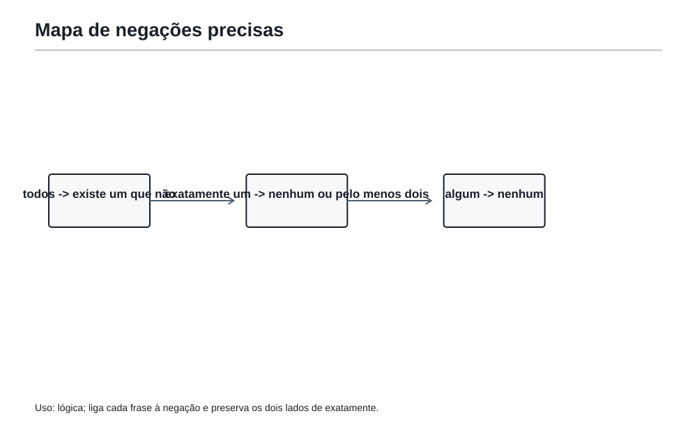
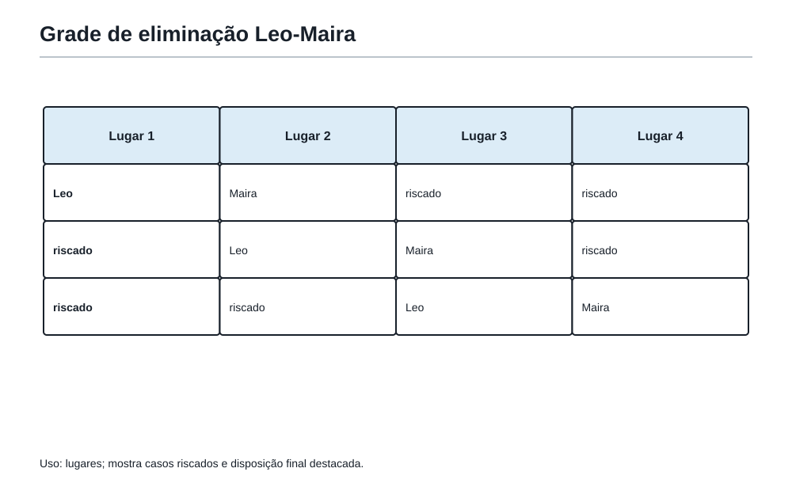
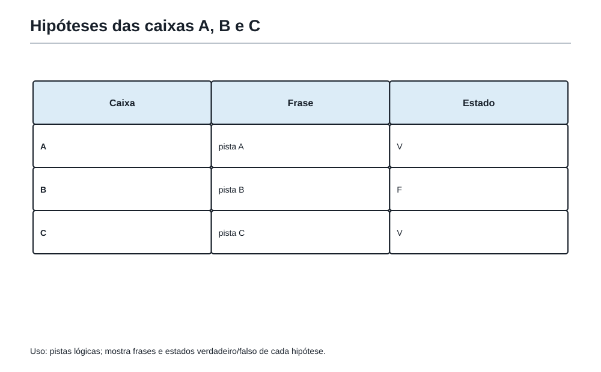
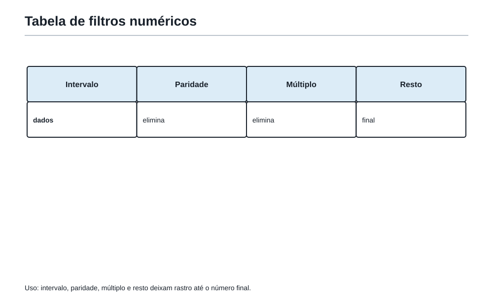

Quando a lógica encontra o caminho
1. Depois de contar, vem a pergunta que decide
No capítulo anterior, Felipe aprendeu a contar possibilidades sem esquecer nenhuma e sem repetir a mesma. Árvores, tabelas e caminhos em malha ajudaram a organizar escolhas que, no começo, pareciam invisíveis.
Mas alguns problemas olímpicos fazem uma coisa curiosa: não pedem uma conta logo de início. Eles apresentam frases, pistas, lugares, pessoas, cartões ou caixas e perguntam o que precisa acontecer.
Nesses momentos, a pergunta não é apenas:
Quantas possibilidades existem?
Ela passa a ser:
Quais possibilidades ainda sobrevivem depois de todas as pistas?
Essa é a sala da lógica.
Lógica matemática não é falar difícil. É ler com precisão, transformar frases em afirmações que podem ser verificadas e eliminar o que entra em contradição com os fatos.
O Professor da Academia colocou três cartões sobre a mesa:
- “Todo múltiplo de 6 é par.”
- “Todo número par é múltiplo de 6.”
- “Algum número ímpar é múltiplo de 6.”
Felipe leu rápido e disse:
— Os três falam de números pares. Então devem ser parecidos.
A coruja, que às vezes fazia perguntas em vez de comentários, respondeu:
— Parecidos não significa iguais. Qual deles resiste a um exemplo? Qual deles cai diante de um único contraexemplo?
Essa é uma boa primeira chave: na lógica, uma palavra pequena pode mudar toda a frase.
2. Afirmações que podem ser verificadas
Uma afirmação matemática é uma frase para a qual podemos decidir, usando os dados, se ela é verdadeira ou falsa.
Veja estes exemplos:
- “Todo múltiplo de 6 é par.”
- “Todo número par é múltiplo de 6.”
- “Algum número ímpar é múltiplo de 6.”
A primeira é verdadeira. Se um número é múltiplo de 6, ele pode ser escrito como 6 × k. Como 6 é par, o resultado também é par.
A segunda é falsa. Basta encontrar um número par que não seja múltiplo de 6. O número 2 serve. Também servem 4, 8, 10 e muitos outros.
A terceira é falsa. Todo múltiplo de 6 é par; portanto, nenhum deles pode ser ímpar.
Repare no poder de um contraexemplo. Para derrubar uma frase que começa com “todo”, não é preciso testar todos os números do universo. Basta um caso que não obedeça à regra.
Antes de concordar ou discordar, pergunte: qual seria um exemplo que confirma a frase? E qual seria um exemplo que a derruba?
Verdadeiro, falso ou não determinado?
Existe uma terceira situação muito importante: às vezes os dados não bastam para concluir.
Uma turma tem 30 estudantes. Sabemos apenas que 18 gostam de matemática.
Considere a frase:
“Algum estudante da turma gosta de futebol.”
Ela pode ser verdadeira na vida real, mas os dados dados pelo problema não permitem afirmar isso. Não sabemos nada sobre futebol.
Portanto, a resposta lógica é:
Não determinado pelos dados.
Não determinado não quer dizer falso. Quer dizer apenas que a informação disponível ainda não obriga uma resposta.
| Afirmação | Situação | Por quê? |
|---|---|---|
| Todo múltiplo de 6 é par. | Verdadeira | Um múltiplo de 6 sempre tem fator 2. |
| Todo número par é múltiplo de 6. | Falsa | O número 2 é par e não é múltiplo de 6. |
| Algum aluno gosta de futebol. | Não determinado | O enunciado não falou de futebol. |
Não invente uma informação que o problema não entregou. Uma conclusão só vale quando as pistas a sustentam.
3. As palavras pequenas que mandam na frase
Na Academia, há palavras que merecem ser circuladas na primeira leitura. Elas parecem discretas, mas carregam quase toda a força lógica de uma frase.
| Palavra | O que ela exige |
|---|---|
| todos | nenhum caso pode escapar |
| nenhum | não existe sequer um caso |
| algum | existe pelo menos um caso |
| sempre | vale em toda situação indicada |
| nunca | não vale em situação alguma indicada |
| exatamente | nem mais, nem menos |
| no máximo | pode ser menos, mas não pode passar |
| no mínimo | pode ser mais, mas não pode ficar abaixo |
Considere as frases:
- “Todos os cartões são azuis.”
- “Algum cartão é azul.”
A primeira exige que cada cartão seja azul. A segunda exige apenas um cartão azul. Portanto, a primeira é muito mais forte.
Agora compare:
- “A equipe fez no máximo 3 pontos.”
- “A equipe fez exatamente 3 pontos.”
No máximo 3 permite 0, 1, 2 ou 3. Exatamente 3 permite apenas 3.
Felipe escreveu no quadro:
no máximo 3 = 0, 1, 2 ou 3
O Professor assentiu.
— Excelente. Quando uma expressão pode ser traduzida em uma pequena lista, ela fica muito menos misteriosa.
Essas ferramentas não servem só para problemas de lógica. Elas também evitam erros em contagem, geometria, desigualdades e enunciados de prova.
4. Negar não é gritar o contrário
Uma das armadilhas mais comuns da lógica é negar uma frase com exagero.
Considere:
“Todos os armários estão fechados.”
A negação correta é:
“Pelo menos um armário não está fechado.”
Não é correto negar dizendo “Nenhum armário está fechado”. Essa segunda frase é muito mais forte. É possível que apenas um armário esteja aberto e todos os outros estejam fechados.
Veja outros pares importantes:
| Frase | Negação correta |
|---|---|
| Todos os alunos resolveram o problema. | Pelo menos um aluno não resolveu o problema. |
| Nenhum caminho passa pelo ponto P. | Pelo menos um caminho passa pelo ponto P. |
| Algum cartão é dourado. | Nenhum cartão é dourado. |
| A equipe fez exatamente 4 pontos. | A equipe não fez 4 pontos. |
| Há no máximo 2 portas abertas. | Há pelo menos 3 portas abertas. |
| Há no mínimo 5 moedas na caixa. | Há no máximo 4 moedas na caixa. |
No caso de “exatamente 4”, a negação inclui duas possibilidades: pode haver menos de 4 ou mais de 4. Por isso, dizer apenas “há menos de 4” não basta.
Para negar “todos”, procure “pelo menos um não”. Para negar “algum”, procure “nenhum”. Para negar “exatamente”, aceite tanto menos quanto mais.

5. Quando aparece “se... então...”
Agora observe esta frase:
Se um número termina em 0, então ele é múltiplo de 10.
Ela é verdadeira. Terminar em 0 garante que o número pode ser dividido por 10 sem sobra.
Mas cuidado: não podemos simplesmente inverter a frase e continuar acreditando nela sem testar.
Se um número é múltiplo de 10, então ele termina em 0.
Neste caso, a frase invertida também é verdadeira. Mas isso é uma característica particular dos múltiplos de 10, não uma permissão geral para inverter condições.
Veja esta outra:
Se um número é múltiplo de 4, então ele é par.
Ela é verdadeira. Todo múltiplo de 4 é par.
Agora a inversão:
Se um número é par, então ele é múltiplo de 4.
É falsa. O número 6 é par, mas não é múltiplo de 4.
Uma condição pode ser suficiente sem ser necessária.
Ser múltiplo de 4 é suficiente para ser par: quando isso acontece, a conclusão está garantida.
Ser par é necessário para ser múltiplo de 4: um múltiplo de 4 não consegue ser ímpar. Mas ser par, sozinho, não basta para garantir que o número seja múltiplo de 4.
O Matemático Invisível deixou uma pergunta no mural:
“Ser divisível por 6 é suficiente para ser divisível por 3?”
Sim. Todo múltiplo de 6 é múltiplo de 3.
“Ser divisível por 3 é suficiente para ser divisível por 6?”
Não. O número 3 é divisível por 3, mas não por 6.
Uma boa maneira de testar uma inversão é procurar um contraexemplo antes de confiar nela.
6. Tabelas: o lugar onde as pistas podem respirar
Quando há várias pessoas, posições, horários ou objetos, tentar guardar tudo apenas na cabeça é cansativo. Uma tabela transforma pistas em um terreno visível.
Quatro estudantes vão sentar em uma fila com quatro lugares, numerados de 1 a 4: Nando, Sofia, Leo e Maira.
As pistas são:
- Maira senta imediatamente depois de Leo.
- Sofia não senta em uma ponta.
- Nando senta antes de Leo.
Não é preciso adivinhar. Vamos eliminar.
Se Leo estivesse no lugar 1, Maira teria de estar no 2, mas Nando não conseguiria ficar antes de Leo. Impossível.
Se Leo estivesse no lugar 2, Maira ficaria no 3. Nando teria de ocupar o 1, e Sofia sobraria para o 4. Mas Sofia não pode sentar em uma ponta. Impossível.
Logo, Leo está no lugar 3 e Maira no 4. Nando deve estar antes de Leo. Sofia não pode ficar no 1, então Sofia fica no 2 e Nando no 1.
| Lugar | 1 | 2 | 3 | 4 |
|---|---|---|---|---|
| Estudante | Nando | Sofia | Leo | Maira |
Chegamos a uma resposta porque cada possibilidade errada entrou em conflito com uma pista.

7. Contradição: quando uma hipótese bate numa parede

Uma contradição acontece quando uma hipótese obriga uma coisa e uma pista obriga o contrário.
Ela não é um fracasso. É uma placa muito útil dizendo:
Por aqui não passa.
Considere três caixas A, B e C. Uma medalha está em exatamente uma delas. Cada caixa traz uma frase:
- Caixa A: “A medalha está na caixa B.”
- Caixa B: “A medalha não está na caixa B.”
- Caixa C: “A medalha não está na caixa A.”
Sabemos que exatamente uma das três frases é verdadeira.
Vamos testar as hipóteses com calma.
Se a medalha estivesse em B:
- a frase da caixa A seria verdadeira;
- a frase da caixa B seria falsa;
- a frase da caixa C seria verdadeira.
Teríamos duas frases verdadeiras. Contradição.
Se a medalha estivesse em C:
- a frase da caixa A seria falsa;
- a frase da caixa B seria verdadeira;
- a frase da caixa C seria verdadeira.
De novo, duas frases verdadeiras. Contradição.
Portanto, a medalha está na caixa A. Nesse caso, apenas a frase da caixa B é verdadeira.
| Medalha em... | Frase A | Frase B | Frase C | Serve? |
|---|---|---|---|---|
| A | F | V | F | Sim |
| B | V | F | V | Não |
| C | F | V | V | Não |
Uma hipótese que produz duas respostas incompatíveis deve ser abandonada, mesmo que pareça bonita no começo.
8. “Pode ser” não é o mesmo que “precisa ser”
Esta diferença é pequena na fala diária, mas enorme em problemas olímpicos.
Suponha que Ana, Bruno e Caio receberam, cada um, uma medalha de ouro, prata ou bronze, sem repetir medalhas. Sabemos apenas que Ana não recebeu ouro.
Bruno pode receber ouro. Caio também pode receber ouro. Ainda não há dados para decidir qual deles recebeu.
Mas se acrescentarmos:
Bruno recebeu uma medalha de valor maior que a de Caio.
Então Bruno precisa receber ouro, Caio precisa receber bronze e Ana fica com prata.
A primeira pista deixava várias possibilidades abertas. A segunda fechou todas menos uma.
Em uma solução, use “pode ser” quando existe pelo menos um caso compatível. Use “precisa ser” apenas quando todos os casos compatíveis levam à mesma conclusão.
Para provar que algo pode acontecer, basta construir um caso válido. Para provar que precisa acontecer, é preciso eliminar todos os casos contrários.
Essa ferramenta conversa diretamente com a combinatória do capítulo anterior. Primeiro listamos ou organizamos casos; depois vemos o que continua possível e o que se tornou inevitável.
9. Lógica misturada com outras ferramentas
Na OBMEP, a lógica raramente vem sozinha. Ela se mistura com números, restos, contagem, posições e geometria.
Veja este pequeno problema.
Um número natural
ndeixa resto 1 quando dividido por 3. Sabe-se também quené par e está entre 10 e 20. Qual é o valor dense ele é múltiplo de 5?
Vamos organizar as pistas:
- entre 10 e 20 e múltiplo de 5:
15ou20; - par: sobra apenas
20; 20deixa resto 2 na divisão por 3, não resto 1.
Não há nenhum número que satisfaça todas as pistas.
Isso não significa que esquecemos de procurar. Significa que o conjunto de condições é impossível.
Agora altere apenas uma pista: em vez de “deixa resto 1”, leia “deixa resto 2”. Então 20 funciona.
O papel da lógica foi organizar filtros. O papel dos restos foi testar uma condição numérica. Juntos, eles resolveram o problema.
Em problemas mistos, transforme cada dado em um filtro e aplique-os um de cada vez.
OBMEP10. Problema em estilo OBMEP — As placas do corredor
Três salas da Academia, A, B e C, guardam uma chave. A chave está em exatamente uma sala. Em cada porta há uma placa:
- A: “A chave não está na sala A.”
- B: “A chave está na sala C.”
- C: “A chave não está na sala C.”
Exatamente duas placas dizem a verdade. Em qual sala está a chave?
Ver solução
Solução comentada
Vamos testar as três posições possíveis.
Se a chave estivesse em A:
- placa A: falsa;
- placa B: falsa;
- placa C: verdadeira.
Haveria apenas uma placa verdadeira. Não serve.
Se a chave estivesse em B:
- placa A: verdadeira;
- placa B: falsa;
- placa C: verdadeira.
Há exatamente duas placas verdadeiras. Serve.
Se a chave estivesse em C:
- placa A: verdadeira;
- placa B: verdadeira;
- placa C: falsa.
Também haveria duas placas verdadeiras.
Então as pistas ainda permitem duas respostas: B ou C.
Essa é a parte importante: o problema, como está escrito, não determina uma única sala. A conclusão correta não é escolher uma por palpite. É dizer que a chave pode estar em B ou em C.
Resposta: não é possível determinar uma única sala; as salas B e C são compatíveis com as pistas.
O problema foi feito assim de propósito. Em lógica, perceber que os dados são insuficientes também é resolver.
OBMEP11. Problema em estilo OBMEP — A fila da biblioteca
Quatro estudantes, Davi, Elisa, Gabriel e Helena, estão em uma fila de 1 a 4. Sabe-se que:
- Helena está imediatamente depois de Gabriel.
- Davi está antes de Gabriel.
- Elisa não está em uma ponta.
Qual é a ordem da fila?
Ver solução
Solução comentada
A dupla Gabriel–Helena não pode ocupar os lugares 1 e 2, pois Davi deveria ficar antes de Gabriel e não haveria espaço.
Ela também não pode ocupar os lugares 2 e 3: Davi ficaria no 1 e Elisa sobraria para o 4, uma ponta proibida.
Portanto, Gabriel e Helena ocupam os lugares 3 e 4.
Davi está antes de Gabriel. Elisa não pode ser a primeira. Logo:
| Lugar | 1 | 2 | 3 | 4 |
|---|---|---|---|---|
| Estudante | Davi | Elisa | Gabriel | Helena |
Resposta: Davi, Elisa, Gabriel, Helena.
OBMEP12. Problema em estilo OBMEP — A regra que não volta
Considere a afirmação:
“Se um número é múltiplo de 12, então é múltiplo de 3.”
Qual das frases abaixo é necessariamente verdadeira?
A) Se um número é múltiplo de 3, então é múltiplo de 12.
B) Todo número não múltiplo de 3 não é múltiplo de 12.
C) Todo número par é múltiplo de 12.
D) Todo múltiplo de 3 é par.
Ver solução
Solução comentada
A alternativa A inverte a condição. É falsa: 3 é múltiplo de 3, mas não de 12.
A alternativa C é falsa: 2 é par, mas não é múltiplo de 12.
A alternativa D é falsa: 3 é múltiplo de 3, mas é ímpar.
Resta B. Se um número fosse múltiplo de 12, ele seria obrigatoriamente múltiplo de 3. Portanto, um número que não é múltiplo de 3 não pode ser múltiplo de 12.
Resposta: B.
OBMEP13. Problema em estilo OBMEP — As medalhas da equipe
Ana, Bruno e Caio receberam, sem repetição, uma medalha de ouro, uma de prata e uma de bronze. Sabe-se que:
- Ana não recebeu ouro.
- Bruno recebeu uma medalha de valor maior que a de Caio.
Quem recebeu cada medalha?
Ver solução
Solução comentada
Bruno não pode receber prata, pois então Caio teria de receber bronze e Ana ficaria com ouro, contrariando a primeira pista.
Bruno também não pode receber bronze, pois não existe medalha de valor menor para Caio.
Logo, Bruno recebeu ouro.
Caio recebeu uma medalha de valor menor, portanto não pode receber prata se Ana ficaria com bronze? Vamos verificar: se Caio recebesse prata, Ana receberia bronze. Isso respeita as duas pistas.
Mas também seria possível Caio receber bronze e Ana prata. Portanto, com as pistas dadas, a distribuição completa ainda não é única.
As possibilidades são:
| Ana | Bruno | Caio | |---|---| | Prata | Ouro | Bronze | | Bronze | Ouro | Prata |
Resposta: Bruno recebeu ouro; Ana e Caio podem trocar prata e bronze. Não há dados para determinar mais.
Mais uma vez, a resposta lógica não pode inventar uma certeza que as pistas não deram.
OBMEP14. Problema em estilo OBMEP — O número escondido

Um número natural n satisfaz simultaneamente as condições:
10 < n < 30;né par;né múltiplo de 5;- ao dividir
npor 3, o resto é 2.
Determine n.
Ver solução
Solução comentada
Os múltiplos de 5 entre 10 e 30 são:
15, 20, 25.
Entre eles, o único par é 20.
Finalmente:
20 = 3 × 6 + 2.
Logo, ao dividir 20 por 3, o resto é 2.
Resposta:
n = 20.
Não foi necessário procurar todos os números de 11 a 29. Cada condição funcionou como um filtro.
Oficina15. Oficina Olímpica 9 — Pistas que não deixam escapar
Desafio 1 — A negação certa
Qual é a negação correta da frase “Todos os 12 cartões da caixa são vermelhos”?
Resposta comentada: “Pelo menos um dos 12 cartões não é vermelho.” Não podemos dizer “nenhum é vermelho”, pois talvez só um cartão tenha outra cor.
Desafio 2 — No máximo não é exatamente
Uma equipe marcou no máximo 4 pontos. Quais totais são possíveis, considerando apenas pontos inteiros não negativos?
Resposta comentada: 0, 1, 2, 3 ou 4. “No máximo 4” permite todos os valores até 4.
Desafio 3 — Uma inversão perigosa
É verdade que “se um número é múltiplo de 8, então é par”. A frase inversa é sempre verdadeira?
Resposta comentada: Não. O número 6 é par e não é múltiplo de 8. Ser múltiplo de 8 é suficiente para ser par, mas ser par não é suficiente para ser múltiplo de 8.
Desafio 4 — Três lanternas
Três lanternas A, B e C estão em uma das posições ligada ou desligada. Sabe-se que:
- exatamente duas lanternas estão ligadas;
- A está ligada se, e somente se, B está desligada;
- C está ligada.
Quais lanternas estão ligadas?
Resposta comentada: Como C está ligada e exatamente duas lanternas estão ligadas, exatamente uma entre A e B está ligada. Isso já combina com a segunda pista: A ligada equivale a B desligada. Portanto, há duas possibilidades compatíveis: A e C ligadas, ou B e C ligadas? Vamos testar cuidadosamente a expressão “A está ligada se, e somente se, B está desligada”. Ela diz que A ligada acontece exatamente quando B desligada.
Se A está ligada, B está desligada: A e C ligadas, válido. Se B está ligada, então B não está desligada; logo A não pode estar ligada. A desligada e B ligada também satisfaz a equivalência, e C ligada dá exatamente duas lanternas ligadas.
Conclusão: as pistas não determinam uma única configuração: podem estar ligadas A e C, ou B e C.
Este desafio mostra que uma frase forte ainda pode deixar mais de uma possibilidade, e que é preciso testar todas as condições.
Desafio 5 — A última posição
Quatro livros diferentes de matemática, história, ciências e literatura estão em uma prateleira. Sabe-se que:
- o livro de história está imediatamente à esquerda do de ciências;
- o livro de literatura não está em uma ponta;
- o livro de matemática está à direita do de ciências.
Qual é a ordem dos livros?
Resposta comentada: História e ciências formam uma dupla nessa ordem. Elas não podem estar nas posições 2 e 3, pois matemática teria de ficar à direita do livro de ciências, na posição 4, e literatura sobraria para a posição 1, uma ponta proibida. Logo, história e ciências ocupam 1 e 2; literatura ocupa 3 e matemática ocupa 4.
Resposta: história, ciências, literatura, matemática.
16. As ferramentas da Mochila nesta sala
Nesta sala, a Mochila ganhou ferramentas de leitura precisa e eliminação organizada:
- Transformar frases em afirmações verificáveis.
- Separar verdadeiro, falso e não determinado.
- Negar uma frase sem exagerar para o lado oposto.
- Cuidar de palavras como todos, nenhum, algum, sempre e nunca.
- Cuidar de expressões como exatamente, no máximo e no mínimo.
- Entender “se... então...” como uma condição com consequência.
- Não inverter uma condição sem verificar.
- Distinguir condição suficiente de condição necessária.
- Listar possibilidades antes de eliminar.
- Usar tabelas para organizar pistas.
- Eliminar casos impossíveis.
- Testar hipóteses e procurar contradições.
- Distinguir “pode ser” de “precisa ser”.
- Combinar lógica com contagem, restos, paridade e posições.
Quando um problema parecer cheio de frases, a primeira jogada não precisa ser uma conta. Pode ser uma tabela, uma lista de casos, um contraexemplo ou uma pergunta simples:
O que esta pista realmente obriga?
17. Figuras aplicadas no ponto de uso
Os quadros, a grade de lugares, as caixas e os filtros foram especificados nas seções em que as pistas são usadas. Nenhuma representação visual adicional é necessária no encerramento.
18. Pergunta para amanhã
Agora Felipe já consegue contar possibilidades e eliminar as que entram em contradição. Mas em problemas olímpicos mais fortes, restos, figuras, padrões, contagem e lógica podem aparecer todos misturados.
Quando um problema parece ter muitas portas ao mesmo tempo, como escolher a primeira jogada sem sair calculando no escuro?
No próximo capítulo, a Academia entra na sala dos problemas mistos e das estratégias olímpicas.